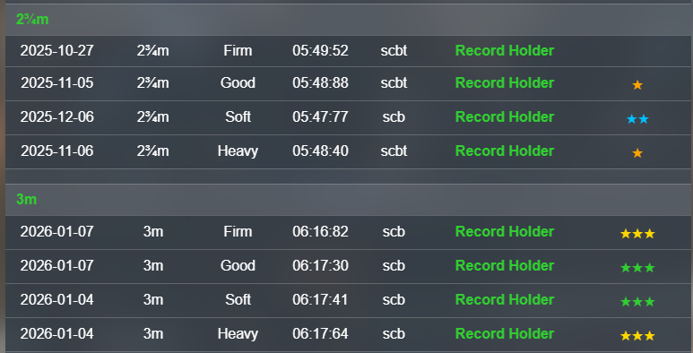

Training Stars
Interpreting the Training Stars

There are 5 possibilities
- No Star
- Single Yellow Star
- Double Blue Star
- Treble Green Star
- Treble Gold Star
Note: You need to have a premium subscribtion to be able to view your horses training stars.
There is no mention on the site of what these indicate. However, based on how these ratings normally work on other sites,
it is reasonable to assume .....
- The best horses on the site show 3 gold stars and are in the top 5%
- Better horses on the site will show 3 Green Stars. Possibly the top 10%
- Good horses will show 2 Blue Stars.
- Average horses will show 1 Yellow Star.
- Poor horses will show no Star.
Note:
The horse may display no star or yellow star because it is not as mature as other horses.
The horse may display no star or yellow star because it's ground or xp maturity is low.
It is not uncommon for a horse to move from 1 yellow to 2 blue or 2 blue stars to 3 green stars with time and maturity.
Conversly, it can go from green to blue or blue to yellow if it does not mature as much or matures more slowly.
These are training times and horses will behave differently on the track.
Return to Previous Page